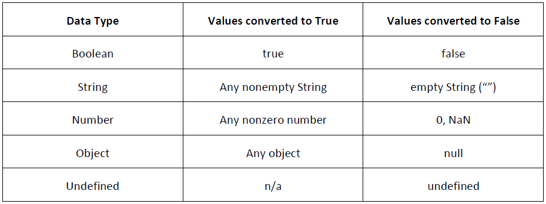

Index
-
Functions
-
Data types (primitive types)
-
Flow-Control statements
Functions
-
Functions are the core of any language, because they allow the encapsulation of statements that can be run anywhere and at any time.
-
Example:
Data types (primitive types)
-
Undefined
-
Null
-
Boolean
-
Number
-
String
There is also one complex data type called Object, which is an unordered list of name-value pairs.
Undefined type
-
The undefined type has only one value, the special value undefined. You can use undefined to determine whether a variable has a value
-
Example:
Null type
-
The Null type is the second data type that has only one value: the special value null. a null value is an empty object pointer, which is why typeof returns "object" when it’s passed a null value.
-
Example:
-
It is advisable to initialize the variable to null as opposed to anything else. That way, you can explicitly check for the value null to determine if the variable has been filled with an object reference at a later time
Boolean type
-

-
These conversions are important to understand because flow-control statements, such as the if statement, automatically perform this Boolean conversion.
Number type
-
The number type uses the IEEE-754 format to represent both integers and floating-point values (also called double-precision values in some languages)
-
var intNum = 55; //integer
var floatNum = 5.5; //float number
var floatNum2 = .5; //float number, valid but not recommended
var floatNum3 = 3.125e7; //equal to 31250000
var floatNum4 = 5e-7; //equal to 0.0000005
var octalNum1 = 070; //octal for 56
var octalNum2 = 079; //invalid octal - interpreted as 79
var octalNum3 = 08; //invalid octal - interpreted as 8
var hexNum1 = 0xA; //hexadecimal for 10
var hexNum2 = 0x1f; //hexadecimal for 31
Number.MAX_VALUE // this will show the highest value you can have
Number.MIN_VALUE // this will show the lowest value you can have
Number.NEGATIVE_INFINITY; Number_POSITIVE_INFINITY //are higher and lower though
Number type (2)
-
Storing floating-point values uses twice as much memory as storing integer values. ECMAScript always looks for ways to convert values into integers. Floating-point values are accurate up to 17 decimal places but are far less accurate in arithmetic computations than whole numbers. For instance, adding 0.1 and 0.2 yields 0.30000000000000004 instead of 0.3. These small rounding errors make it difficult to test for specific floating-point values.
-
a = 0.1;
b=0.2;
if (a + b == 0.3){ //this is not true, AVOID!
alert("You got 0.3");
}
else{
alert("THIS IS SHOWN!!!"); //same happens in PHP...
}
Number type (3)
-
There is a special numeric value called NaN, short for Not a Number, it is used to indicate when an operation intended to return a number has failed (as opposed to throwing an error).
-
alert(NaN == NaN); //false
alert(isNaN(NaN)); //true
alert(isNaN("blue")); //true
alert(typeof 2/0); // NaN
String type
-
The String data type represents a sequence of zero or more 16-bit Unicode characters. Strings can be delimited by either double quotes (") or single quotes (').
-
Unlike PHP, for which using double or single quotes changes how the string is interpreted, there is no difference in the two syntaxes in ECMAScript. A string using double quotes is exactly the same as a string using single quotes.
-
The String data type includes several character literals to represent nonprintable or otherwise useful characters, which can be included in any String.
-
String methods and special characters: http://www.w3schools.com/js/js_obj_string.asp
The Object type (2)
-
Each Object instance has the following properties and methods:
-
constructor — The function that was used to create the object. In the previous example, the constructor is the Object() function.
-
hasOwnProperty(propertyName) — Indicates if the given property exists on the object instance (not on the prototype). The property name must be specified as a string (for example, o.hasOwnProperty(“name”)).
-
isPrototypeOf(object) — Determines if the object is a prototype of another object.
-
propertyIsEnumerable(propertyName) — Indicates if the given property can be enumerated using the for-in statement (discussed later in this chapter). As with hasOwnProperty(), the property name must be a string.
-
toLocaleString() — Returns a string representation of the object that is appropriate for the locale of execution environment.
-
toString() — Returns a string representation of the object.
-
valueOf() — Returns a string, number, or Boolean equivalent of the object. It often returns the same value as toString().
The typeof operator
Because ECMAScript is loosely typed, there needs to be a way to determine the data type of a given variable. The typeof operator provides that information. Using the typeof operator on a value returns one of the following strings:
- "undefined" if the value is undefined
- "boolean" if the value is a Boolean
- "string" if the value is a string
- "number" if the value is a number
- "object" if the value is an object (other than a function) or null
- "function" if the value is a function
Flow-Control statements (1)
IF
if(condition){
statement1
} else if(condition2){
statement2
}
else{
statement3
}
Flow-Control statements (2)
DO-WHILE
Most often used when the body of the loop should be executed at least one before exiting:
do{
statement
}while(expression);
WHILE
The while statement is a pretest loop. This means the escape condition is evaluated before the code inside the loop has been executed.
while(expression){
statement
}
Flow-Control statements (3)
FOR
The for statement is also a pretest loop with the added capabilities of variable initialization before entering the loop and defining postloop code to be executed.
for(initialization; expression; post-loop-expression){
statement
}
Everything that can be done with a for loop can be done using a while loop. You can create an infinite loop like this:
for(;;){ //infinite loop
statement
}
Including only the control expression effectively turns a for loop into a while loop:
for(;i<10;){
statement
}
Flow-Control statements (4)
The break and continue statements provide stricter control over the execution of code in a loop. The break statement exits the loop immediately, forcing execution to continue with the next statement after the loop. The continue statement, on the other hand, exits the loop immediately, but execution continues from the top of the loop:
num = 0;
for (var i=1; i < 10; i++) {
if (i % 5 == 0) {
break;
}
num++;
}
alert(num);
num = 0;
for (var i=1; i < 10; i++) {
if (i % 5 == 0) {
continue;
}
num++;
}
alert(num);
Flow-Control statements (5a)
Labeled statements can be used with the break and continue statements to return to a particular location in the code:
var num = 0;
outermost:
for (var i=0; i < 10; i++) {
for (var j=0; j < 10; j++) {
if (i == 5 && j == 5) {
break outermost;
}
num++;
}
}
alert(num);
Flow-Control statements (5b)
Labeled statements can be used with the break and continue statements to return to a particular location in the code:
var num = 0;
outermost:
for (var i=0; i < 10; i++) {
for (var j=0; j < 10; j++) {
if (i == 5 && j == 5) {
continue outermost;
}
num++;
}
}
alert(num);
Flow-Control statements (6)
SWITCH
switch(expression){
case value:
statement
break;
case value:
statement
break;
default:
statement
}
←
→
/
#